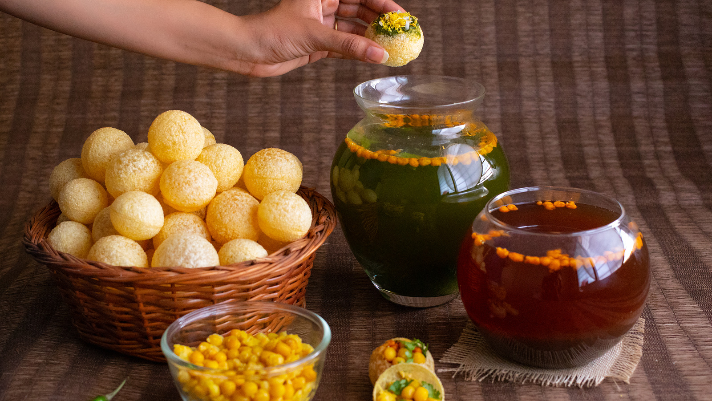

Pani Puri

Description:
Panipuri is deep-fried breaded sphere filled with potato, onion, or
chickpea. It is a common street food in the Indian subcontinent. It is
often spiced with tamarind chutney, chili powder, or chaat masala. A
variant, fuchka, uses spiced mashed potatoes as the filling.
Ingredients:
- 1 cup sonth chutney
- 2 cups mint leaves (firmly packed)
- 75 gms coriander leaves (ground together)
- 6-7 Green chillies
- 2 tbsp cumin seeds (powdered), roasted
- 1 tbsp salt
- 1 tsp chilli powder
- 8 cups water
- 100 gms tamarind (soaked in warm water for half an hour at least)
- 3/4 cup jaggery (broken)
- 2 tsp salt
- 1 tsp black rock salt, powdered
- 1/2 tsp garam masala
- 1 tsp dry ginger, powdered
- 1/4 tsp black pepper, powdered
- 1/4 tsp chilli powder
- 1 tsp chaat masala
- 24 Puffed papri
- 1 cup potatoes (diced), boiled
- 1 cup chickpeas, boiled
- Paani poori ka paani
Steps:
- Mix all the ingredients together, chill and serve.
- Strain the tamarind through a strainer, adding water, to facilitate this.
- Add enough water to the pulp, to make it into a pouring consistency.
- Mix in the rest of the ingredients and bring to a boil, lower the heat, and let it simmer, stirring occasionally, till it thickens a bit.
- Break a hole in the center of the thinner side of the poori, and fill with a little potato and chick pea and sonth if so desired, then fill with the paani and eat the whole poori immediately.